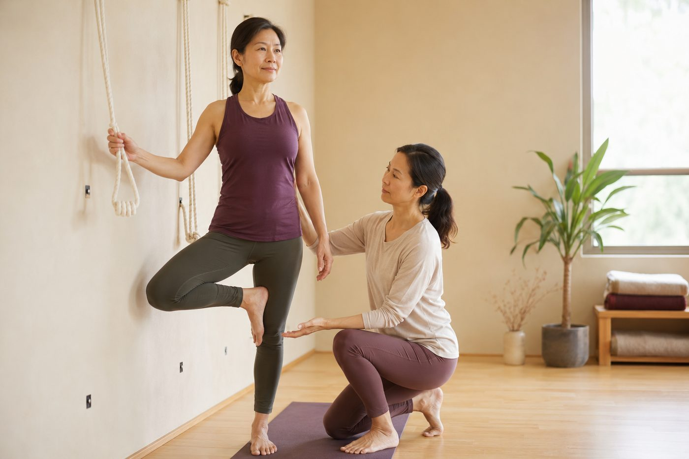

平衡站不穩，是腳沒力還是找不到中線？

單腳站立才幾秒，身體就開始晃、腳趾死命抓地，最後手還是扶了牆一下——你可能因此認定「我天生就是沒平衡感」。先別急著蓋棺論定。站不穩，很少只是「腳沒力」，背後是一整套神經和肌肉的合作暫時對不準；而它們，全都能練回來。
平衡從來不是「腳夠力」這麼單純
你以為站得穩靠的是腿力，其實你的身體同一時間在讀三份「地圖」：眼睛看到的畫面（視覺）、內耳感受到的頭部傾斜與轉動（前庭系統），還有藏在肌肉、肌腱、關節裡的感應器不斷回報的「我的手腳現在在哪、彎了幾度」——這第三份地圖，叫做本體感覺（proprioception）。
大腦每分每秒把三份地圖疊在一起比對，再即時下令讓肌肉微調。只要其中一份訊號變模糊，人就會晃。最好懂的實驗，是閉上眼睛單腳站：少了視覺這一份，你會馬上晃得比睜眼時兇很多。這說明了一件事——你不是腳突然沒力，而是少了一路訊號，大腦一時對不準而已。
你越「用力站穩」，往往晃得越明顯
很多人一站不穩，直覺就是全身用力、把大腿和臀部夾緊，想硬把自己「鎖」住。結果常常適得其反，晃得更誇張。因為真正在維持平衡的，是小肌肉持續而細微的收放，不是大肌肉硬撐。
站著的時候，身體其實一直在做極小幅度的前後搖擺，靠腳踝周邊的肌肉隨時修正回來，這在動作科學裡叫「腳踝策略」。主要出力的是小腿的腓骨長肌、脛前肌，還有腳掌底下那層最常被忽略的足底內在肌群。你若把大腿用力鎖死，等於親手關掉這套靈敏的微調系統，全身變成一根僵硬的柱子——柱子一旦開始傾，就很難再救回來了。
穩，不是靠用力把自己撐住，而是靠小肌肉不停做細微的修正。越想鎖死，越容易倒。
站穩有四個著力點：中線、腳掌、眼睛、呼吸
知道原理之後，練習時把注意力放在四個地方，會比一味「加油、站穩」有效得多：
- 找中線：想像頭頂到尾骨有一條看不見的垂直線，讓重心落在兩腳（或單腳）正上方。核心深層的腹橫肌、脊椎旁的多裂肌一旦醒過來，這條中線就有人守著，身體不必再靠亂晃來找平衡。
- 腳掌紮根：把重量平均分到大拇趾球、小趾球、腳跟這三個點，像三腳架一樣穩。腳趾輕鬆貼地，而不是用力摳緊。
- 眼睛定點：把視線輕輕定在前方一個不動的點上。視覺這份地圖一穩，大腦的計算就輕鬆一半——這也是為什麼一閉眼就特別難站。
- 呼吸穩：憋氣會讓身體整個變緊、反而更僵。保持順順地呼吸，橫膈膜規律升降，核心才有辦法持續穩定地運作。
這四點其實環環相扣。站姿真正在練的，就是這種「地基感」——腳掌怎麼踩穩，可以延伸讀穩定從腳掌開始；而守住中線的核心，也不是靠仰臥起坐練來的，瑜伽的核心那篇說得更明白。
「我天生沒平衡感」是最大的誤會
把站不穩全歸給天分，其實錯過了最關鍵的事實：平衡是一種技能，不是天生的性格。它靠的是神經系統和肌肉反覆磨合出來的默契，而神經是有可塑性的——你練得越多，大腦和肌肉之間那條訊號通道就越順、反應越快。
這也是為什麼同一個平衡動作，第一次站三秒就倒，兩三週後卻能站到三十秒。不是你的腳突然變強壯，而是本體感覺變靈敏了、腳踝的小肌肉學會即時反應了、大腦的整合也更快了。換句話說，你不是「沒有平衡感」，你只是還沒開始練它。壁繩剛好能在這裡幫上忙：抓著繩子、或把身體靠上去，給你一個穩定又不怕跌的外部支撐，讓你安心地把上面那四個著力點，一次一次練成習慣。
你晃的到底是腳、是核心，還是姿勢？先看清楚再練
AI 體態檢測在教室現場做，透過影像幫你看出重心偏移、骨盆與足踝的排列，找出你「晃」的真正源頭，練起來才不會白費力。
預約首次 NT$199 AI 體態檢測今天可以先記住的一件事
站不穩不是天分問題，是還沒練的技能。下次做平衡動作，先別急著用力，反而放鬆一點：眼睛找一個定點、腳掌三個點踩實、呼吸順順的，讓身體自己去做那些細微的修正。從扶著牆、扶著椅背、或有壁繩支撐開始都可以，能站住三秒，就往五秒、十秒慢慢加。平衡是練出來的，給身體一點時間，它會慢慢回報你。
本頁為體態與姿勢的一般衛教與練習分享，非醫療診斷或治療。若有疼痛、舊傷或特殊病史，請先諮詢合格醫療專業人員。